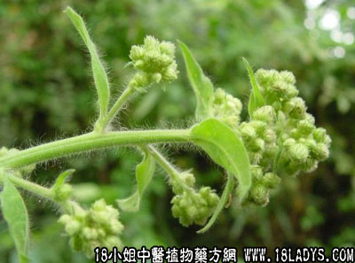

大风艾(中草药名称:大艾)(科目:菊科)

别名：大艾、牛耳艾。
植物名：大艾。
生长环境：本品为多年生草本或亚灌木状。生于林边，林下或谷地的草地上。
分布：云南、广西、广东海南及台湾均产。
采集期：夏、秋，秋季较多。
自采地点：家种或荒地树丛野生。
性味：性温、味微苦、气芳香。
功能：祛风消肿、活血散瘀。
主治、用量和用法：1、产后风肿：生用适量，煎水洗；2、手脚麻痹：用法同上；3、跌打肿痛：生用捣烂，加酒煮，敷肿痛处；4、风湿，脚软无力，配伍用；5、骨节肿痛：配伍用；6、皮肤痕痒：煎水外洗，生干可用；7、风毒肿症：用法同上。
验方1：（治肿胀及风湿关节痛方）生大风艾2两、菎麻叶1两、石菖蒲1两、清水适量，煎洗患处。
（方解）方中大风艾、菎麻叶、石菖蒲均为祛风化湿之品，有消肿利关节作用；煎水外洗患处，使邪气外透，痛肿自消。
（方歌）肿胀风湿关节疼，大风艾叶菎麻群，加入菖蒲煎水洗，祛风消肿效如神。
验方2：（治产后风肿方）：大风艾2两、青蒟5钱、豆豉羌1两、石菖蒲1两、毛麝香1两，清水煎洗患处。
（方解）产后气血虚弱，或调理失宜，或腠理不密尔外受风邪，易引起面目四肢浮肿。此方青蒟、豆豉羌、毛麝香均善祛风，石菖蒲、大风艾能使气血流行而祛外袭之风邪，风邪消散，其肿自消。
（方歌）产后风肿体多虚，大风艾与青蒟俱，毛麝菖蒲豉羌合，煎洗风祛肿自除。
验方3：（治风湿脚软无力方）大风艾2两、柚皮1两、千斤拔1两、黑老虎1两、豆豉羌1两、清水适量，煎洗患处。
（方解）本方大风艾、豆豉羌、柚皮祛风化湿，千斤拔强筋壮骨，兼有活血作用，黑老虎通络。对风湿客于下肢经络，血无濡养而致脚软无力者，宜用本方。
（方歌）风湿脚软步难行，大风艾起黑虎藤，豆豉柚皮千斤拔，强筋壮骨洗方珍。
参考资料：《药材学》市场上售的天然冰片，实际采用菊科植物大艾的新鲜叶经蒸馏，冷却而得，为世界闻名的天然左旋龙脑，多出口外销。